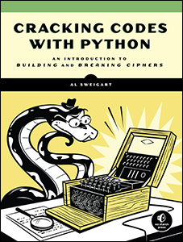

Introduktion
Programmering B
Vibenshus Gymnasium
2022
Lidt om mig
Lidt om Pro B
De formelle sider :/
Faglige mål
Eleverne skal kunne:
- bruge programmering til at undersøge et emne eller problemområde, med henblok på - via programmets funktion - at skabe ny indsigt eller til at løse et problem
- behandle problemstillinger i samspil med andre fag
- anvende avancerede konstruktioner i et programmeringssprog
- redegørefor arkitekturen af programmer på forskellige abstraktionsniveauer, herunder relationen mellem brug og funktion
- redegøre for simple specifiktationsmodeller og realisere disse i simple velstrukturerede programmer samt teste disse
- rette, tilpasse og udvide avancerede programmer
- demonstrere viden om fagets identitet og metoder
- arbejde inkrementelt og systematisk i programmeringsprocessen.
Kernestof
Kernestoffet er:
- programmeringssprog og elementer i programmers opbygning, herunder variabler, typer, udtryk, kontrolstrukturer, parametrisering/abstraktionsmekanismer, rekursion, polymorfi og algoritmemønstre
- arkitekturen for programmers interaktion med omgivelserne med henblik på *hændelsesstyret interaktion og interaktion mellem systemer
- generiske programdele og biblioteksmoduler
- arbejdsgange og systematik i programmeringsprocessen, herunder test og fejlfinding
- abstrakte programmeringsbeskrivelser og dokumentation.
Omfang
- 3 lektioner i 2.g
- 5 lektioner i 3.g
Fordybelsestid
| Grundforløb | 1.g | 2.g efterår | 2.g forår | 3.g efterår | 3.g forår | Samlet | |
|---|---|---|---|---|---|---|---|
| FT MED ret | 2 | 3 | 2 | 3 | 3 | 13 | |
| FT UDEN ret | 6 | 3 | 5 | 3 | 17 | ||
| terminsprøve/projekt | 8 | 8 | |||||
| Samlet | 2 | 9 | 5 | 8 | 6 | 8 | 38 |
Logbog
Den enkelte elev dokumenterer løbende sin falige udvikling i en logbog. Dokumentationen i logbogen kan have form af f.eks. it-systemer, programmer, noter, synopser, programbeskrivelser og flowcharts.
Eksamensprojekt
- 20 timers undervisningstid til sidst i faget.
- Grupper af 2 til 3 (i særlige tilfælde individuelt)
- Består af et produkt (kode etc) og en synopsis (rapport).
- Synopsen skal dokumentere udviklingen af det færdige produkt, maks 5 til 8 normalsider ekskl. kode, rutediagrammer, bilag mm.
- Skolen giver nogle projektoplæg, der kan vælge mellem.
- Eksamensgrupperne skal udarbejde en fælles projektbeskrivelse inden for et af projektoplæggene. Projektbeskrivelsen skal godkendes af skolen.
- Synopsen udarbejdes individuelt.
- Synopsis og produkt skal senest afleveres en uge før eksamensperioden begynder.
- Synopsis og produkt indgår i grundlaget for den afsluttende årskarakter.
- Synopsen rettes og kommenteres ikke inden en eventuelt prøve.
Eksamen
- Mundtlig eksamen: Fremlæggelse af eksamensprojekt og opgave med bilag tildelt ved lodtrækning.
- Synopser, fortegnelse over eksamensprojekter samt opgaver med bilag sendes til censor
- Problemstillinger drøftes med censor inden eksaminerne.
- Forberedelsestid: 60 min
- Eksamenstid: 30 min
- Først præsentation af eksamensprojekt med spørgsmål fra eksaminator og censor. Herefter samtale omkring den trukne opgave med bilag.
- Der gives en samlet karakter ud fra den mundtlige præstation, omfattende præsentation af eksamensprojektet og opgaven med bilag.
- Der skal afleveres 2 eksemplarer af synopserne. Den ene kan fremsendes til censor.
- Produkt og synopsis skal være til rådighed ved eksamen.
- Elever skal gerne selv medbringe udstyr til eksamen.
- Man må gerne anvende internettet i forberedelsen og til eksamen.
De sjove sider :)
Hvordan skal vi så lære at programmere?
Python

1: print("Hello world!")
Hello world!
Det fundamentale
- Vi skal lege det fundamentale ind vha bibliotektet
python arcade - Vi tager udgangspunkt i bogen Arcade Academy - Learn Python
Vi skal bl.a. arbejde med
- Variable og udtryk
- Funktioner
- Kontrolsekvenser - løkker og betingelser
- Lister
- Klasser, objekter og OOP
Udvikling af GUIs
- Vi vil anvende
PyQt6ellerPyside6 - Eventbaseret programmering vha
signals & slotsiQt
1: import sys 2: 3: from PyQt6.QtCore import QSize, Qt 4: from PyQt6.QtWidgets import QApplication, QMainWindow, QPushButton 5: 6: 7: # Subclass QMainWindow to customize your application's main window 8: class MainWindow(QMainWindow): 9: def __init__(self): 10: super().__init__() 11: 12: self.setWindowTitle("My App") 13: 14: button = QPushButton("Press Me!") 15: 16: self.setFixedSize(QSize(400, 300)) 17: 18: # Set the central widget of the Window. 19: self.setCentralWidget(button) 20: 21: 22: app = QApplication(sys.argv) 23: 24: window = MainWindow() 25: window.show() 26: 27: app.exec()

Kryptografi
- Introduktion til forskellige krypterings- og dekrypteringsmetoder. Fra det helt simple til RSA-kryptering.
- Vi vil tage udgangspunkt i bogen Cracking codes with Python
- Her har vi særligt fokus på
algoritmedesignetc
1: message = 'Three can keep a secret, if two of them are dead.' 2: translated = '' 3: 4: i = len(message) - 1 5: while i >= 0: 6: translated = translated + message[i] 7: i = i - 1 8: 9: print(translated)
.daed era meht fo owt fi ,terces a peek nac eerhT

Styring af legorobotter
Vi skal lege med legorobotter!